09 | Operatore CdP
Gestione utenze accreditamento
Una panoramica dei flussi di creazione, ricerca, modifica ed eliminazione delle utenze e delle azioni disponibili, per orientarti passo dopo passo.
- Profilo: Responsabile Centrale/Locale
01.
Creazione utenza - Esterno
Una panoramica sul flusso di creazione utenza esterna da parte del Responsabile Centrale.
Profilo: Responsabile Centrale
Creazione utenza (Esterno)
Punto di accesso
Dalla dashboard è possibile accedere alle principali sezioni tramite le voci di menu.
Menu a tendina
Cliccando sulla voce "Gestione e Consultazione" viene visualizzato un menu a tendina, da cui è possibile accedere alla "Gestione utenti".
Creazione utenza (Esterno)
Avvio del flusso di creazione
Dopo aver effettuato l'accesso alla pagina tramite la voce "Gestione utenti", cliccare sul pulsante "Nuova Utenza" per avviare il flusso di creazione.
Il sistema darà la possibilità al Responsabile Centrale di creare l'utenza per utenti interni o esterni. Cliccare "Utente Esterno".
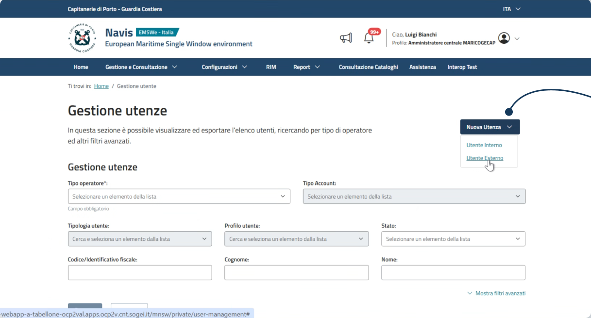
Il Responsabile Centrale può creare un'utenza con relativa richiesta di accreditamento, a fronte di una richiesta di accreditamento pervenuta fuori sistema.
Creazione utenza
Passaggi per creare una nuova utenza (esterno)
Per creare una nuova utenza, il Responsabile Centrale dovrà procedere seguendo i passaggi sottostanti.

Step 2
Dettaglio utente
Consente di aggiungere un nuovo profilo, indicando la tipologia: di account, utente e profilo.
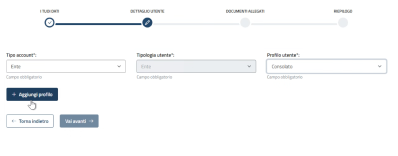

Step 4
Riepilogo
Consente di visualizzare il riepilogo delle informazioni inserite negli step precedenti e procedere con la sottomissione dell'accreditamento.
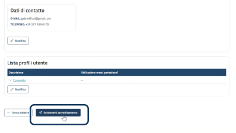
Passaggi per creare nuova utenza (esterno)
I tuoi dati
-
I tuoi dati (in corso)
-
Dettaglio utente (da completare)
-
Documenti allegati (da completare)
-
Riepilogo (da completare)
Dati anagrafici "Extra UE"
Per l'utente "Extra UE" il sistema chiederà di inserire i seguenti dati: Cittadinanza, Identificativo fiscale, se in possesso il numero EORI, Cognome, Nome, Genere, Stato, Luogo e data di nascita.
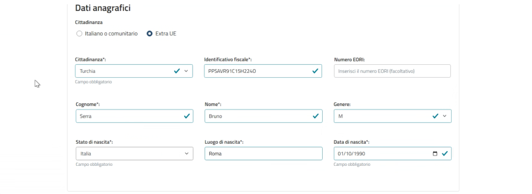
Dati anagrafici "Italiano o comunitario"
Per l'utente "Italiano o comunitario" il sistema chiederà di inserire la cittadinanza e l'identificativo fiscale/codice fiscale. In caso di cittadinanza italiana, con l'inserimento del codice fiscale, verificarlo cliccando il pulsante "Verifica".

Inserimento dati anagrafici
Dopo la verifica compilare i campi indicando: Cognome, Nome, Genere, Stato di nascita, Luogo di nascita e Data di nascita.

Inserimento dati di residenza e di contatto
Indicare se la residenza è estera o meno (Sì/No), l'indirizzo, numero civico, provincia, comune e CAP/ZIP Code. Successivamente inserire il contatto e-mail e telefonico. Cliccare "Vai avanti" per proseguire.
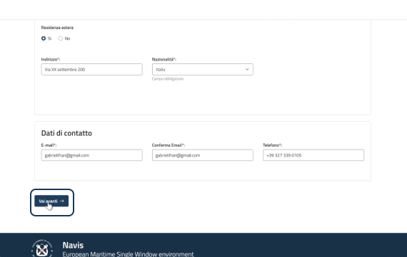
Documento di riconoscimento per utente Extra UE
Se l'utente è Extra UE, è necessario inserire il documento di riconoscimento, selezionando la tipologia del documento e successivamente indicando i dati: Numero documento, Rilasciato da, Data rilascio, Data di scadenza. Cliccare "Vai avanti" per procedere.
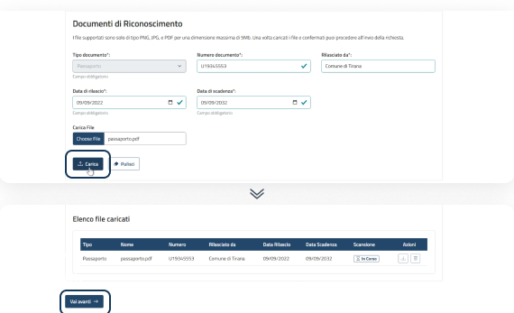
Passaggi per creare nuova utenza (esterno)
Dettaglio utente
-
I tuoi dati (completato)
-
Dettaglio utente (in corso)
-
Documenti allegati (da completare)
-
Riepilogo (da completare)
Inserimento informazioni dettaglio utente
Di seguito sono riportati i flussi di inserimento dati delle diverse tipologie di utenti:
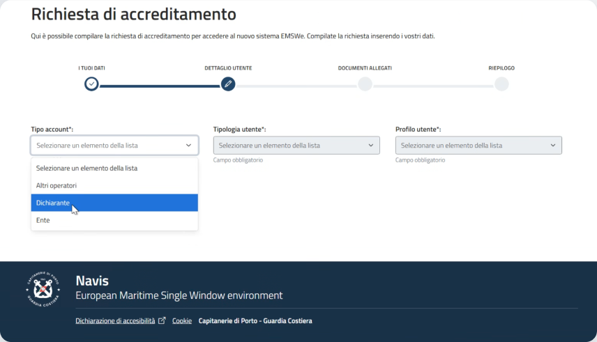
Dettaglio utente
Agente Raccomandatario Marittimo
Selezione tipologia account
Selezionare la tipologia di account "Dichiarante" tramite il menu a tendina.
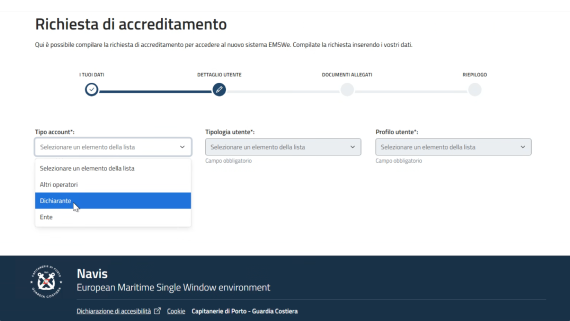
Selezione tipologia utente
Selezionare la tipologia utente "Agenzia marittima" tramite il menu a tendina.
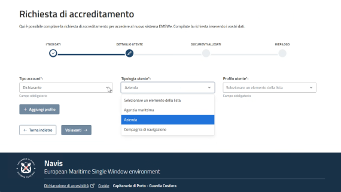
Aggiunta del profilo
Il profilo utente sarà automaticamente selezionato. Successivamente per aggiungere il profilo cliccare il pulsante "Aggiungi profilo".
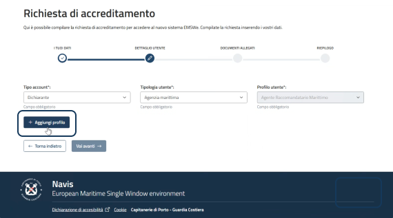
Compila richiesta
Dopo aver aggiunto uno o più profili, quest'ultimo compare all'interno della tabella. Proseguire cliccando l'apposito pulsante "Compila richiesta" per singolo profilo utente presente in tabella.
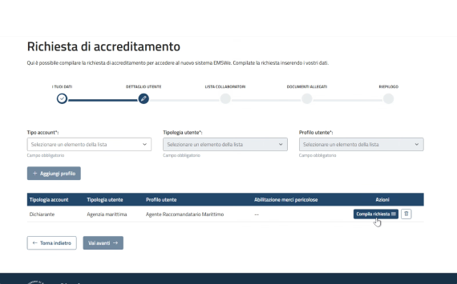
Compilazione camera di commercio
Compilare le informazioni del profilo selezionato, indicando l'eventuale abilitazione alle merci pericolose, la camera di commercio, N° iscrizione camera di commercio e l'abilitazione per la compilazione dell'obbligo di dichiarazione "B8 Libera Pratica Sanitaria", indicando un nuovo indirizzo qualora si selezioni "Altra residenza".
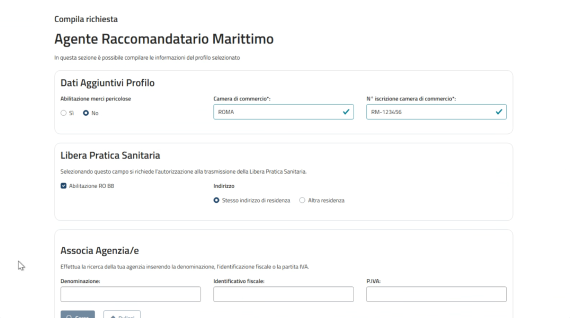
Ricerca e associazione agenzia
Ricercare l'agenzia inserendo la denominazione, l'identificazione o la partita IVA. Successivamente cliccare il pulsante "Cerca".
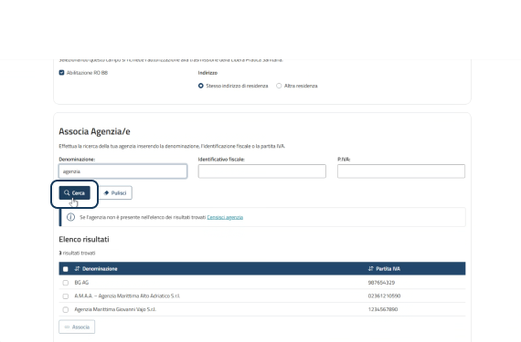
Associazione agenzia
Nell'elenco dei risultati della ricerca, selezionare tramite checkbox una o più agenzie e successivamente associarle cliccando il pulsante "Associa".
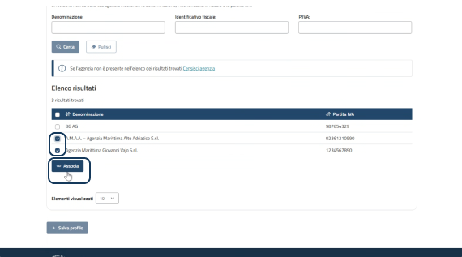
Associazione porto
Proseguire cliccando l'apposito pulsante "Associa porto" per singola agenzia presente in tabella.
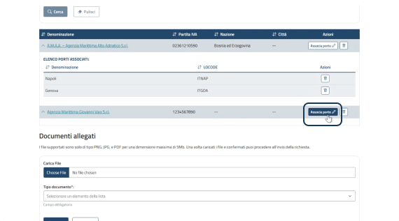
Selezione e aggiunta porto
Il sistema mostra una finestra dove poter selezionare uno o più porti. Dopo la selezione, per aggiungerli cliccare il pulsante "Aggiungi".
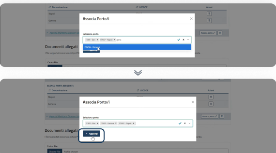
Se l'agenzia non è presente nell'elenco dei risultati trovati, cliccare "Censisci agenzia" all'interno della sezione di associazione.
Agenzia e porti associati e azioni disponibili
L'agenzia e i relativi porti associati sono visualizzati in elenco. Per ogni agenzia è possibile associare nuovi porti tramite l'apposito pulsante o eliminare l'agenzia e/o i singoli porti utilizzando il pulsante con l'icona del cestino.
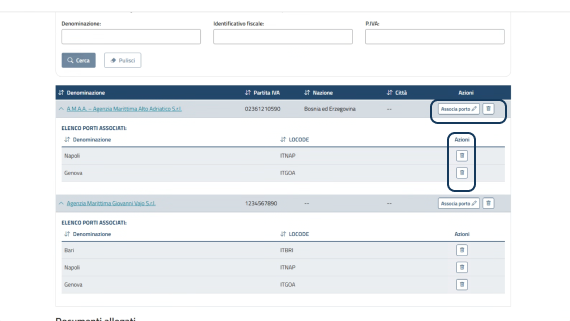
Selezione tipo documento (opzionale)
Allegare documenti cliccando "Scegli file" e successivamente selezionare tramite menu a tendina la tipologia di documento allegato.
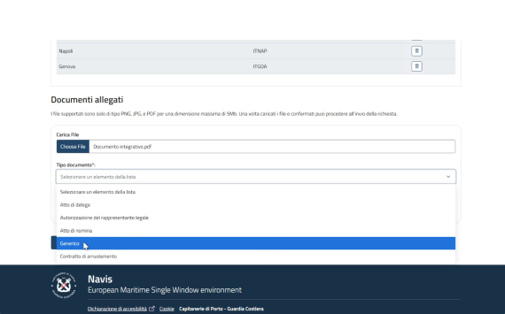
Caricamento documento
Cliccare "Carica" per caricare il documento. Il sistema mostrerà una finestra per confermare il caricamento del file; cliccare "Conferma" per proseguire.
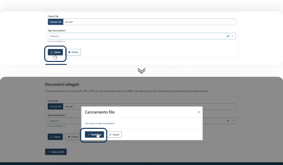
Azioni disponibili su file caricati e salvataggio profilo
Il documento viene mostrato nell'elenco file caricati. Il file può essere scaricato o eliminato tramite gli appositi pulsanti. Successivamente cliccare il pulsante "Salva profilo". L'utente verrà reindirizzato alla pagina iniziale dello step del dettaglio utente.
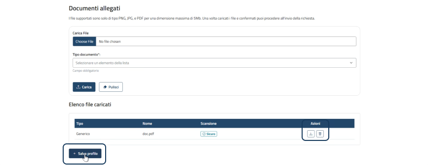
Richiesta compilata e step successivo
È possibile sia modificare il profilo aggiunto tramite il pulsante con l'icona della matita o eliminarlo tramite il pulsante con l'icona del cestino, sia aggiungere un ulteriore profilo secondo le modalità descritte all'inizio di questo step. Per proseguire cliccare il pulsante "Vai avanti".
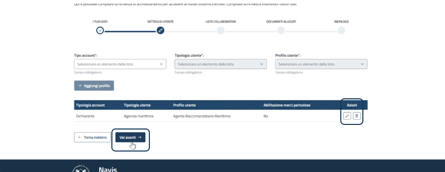
È possibile aggiungere ulteriori profili replicando le operazioni sopra descritte.
Step aggiuntivo
Lista collaboratori (Agente Raccomandatario Marittimo)
Solo per l'Agente Raccomandatario Marittimo, tra lo step Dettaglio utente e lo step Documenti allegati, il flusso prevede lo step aggiuntivo Lista collaboratori.
Aggiunta informazioni collaboratori e scelta agenzia
In questo step l'agente può inserire i suoi collaboratori indicando:
- i dati anagrafici del collaboratore: Nazionalità (Italiana/Non italiana), Codice fiscale (verificarlo cliccando il pulsante "Verifica") o identificativo fiscale, Nome, Cognome ed E-mail;
- le agenzie (tramite checkbox) e i porti tra quelli per i quali l'agente è accreditato ad operare.
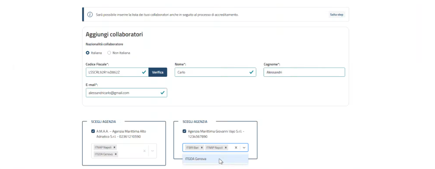
Tipologia obblighi di dichiarazione
Selezionare tramite checkbox uno o più obblighi di dichiarazione su cui il collaboratore avrà visibilità e possibilità di predisporne la bozza.
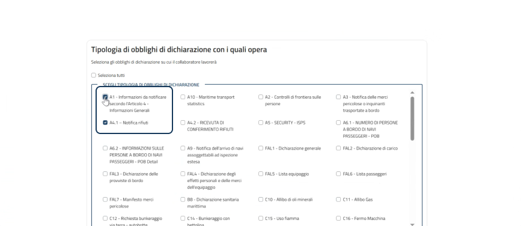
Aggiunta in elenco
Indicare l'eventuale abilitazione alle merci pericolose (Sì/No) e, dopo aver accettato termini e condizioni legate alla nomina dei collaboratori, aggiungere in elenco il collaboratore tramite il pulsante "Aggiungi in elenco".
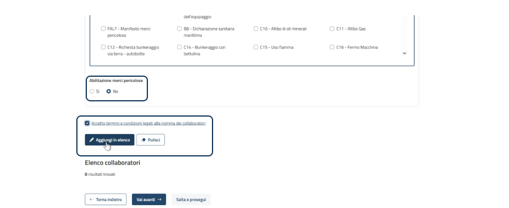
Azioni disponibili e step successivo
Il collaboratore viene visualizzato all'interno dell'elenco collaboratori. Sarà possibile modificarlo attraverso il pulsante con l'icona della matita ed eliminarlo tramite il pulsante con l'icona del cestino. Per proseguire cliccare "Vai avanti". È possibile aggiungere ulteriori collaboratori replicando le operazioni appena descritte.
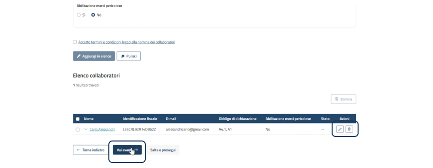
Durante la fase di accreditamento, lo step di aggiunta dei collaboratori può essere saltato. Sarà comunque possibile aggiungerli in un secondo momento.
Dettaglio utente
Comandante
Selezione tipologia account, utente e profilo
Selezionare come tipologia account "Dichiarante", come tipologia utente "Compagnia di navigazione" e come profilo utente "Comandante", infine cliccare il pulsante "Aggiungi profilo".
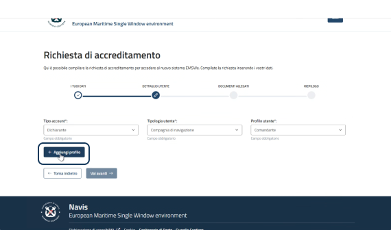
Compila richiesta
Dopo aver aggiunto uno o più profili, quest'ultimo compare all'interno della tabella. Proseguire cliccando l'apposito pulsante "Compila richiesta" per singolo profilo utente presente in tabella.
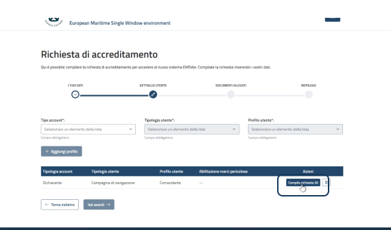
Aggiunta informazioni profilo selezionato
Compilare le informazioni del profilo selezionato, indicando l'eventuale abilitazione alle merci pericolose (Sì/No) e l'abilitazione per la compilazione dell'obbligo di dichiarazione "B8 Libera Pratica Sanitaria", indicando un nuovo indirizzo qualora si selezioni "Altra residenza".
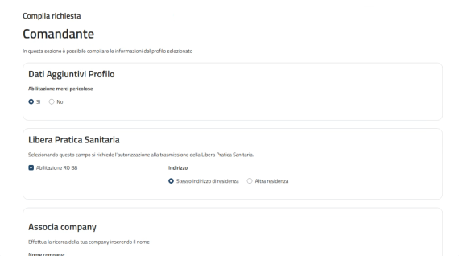
Ricerca company
Ricercare la company inserendo il nome e successivamente cliccare il pulsante "Cerca".
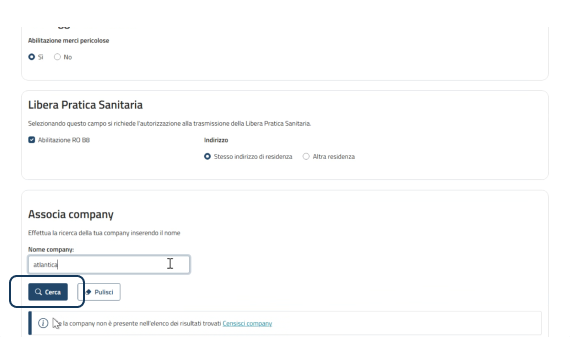
Selezione e associazione company
All'interno dell'elenco dei risultati della ricerca, selezionare una delle company tramite il radio button e successivamente per associarla cliccare l'apposito pulsante "Associa".
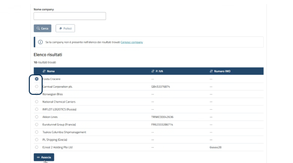
Associazione nave
Proseguire cliccando l'apposito pulsante "Associa nave" per singola company presente in tabella.
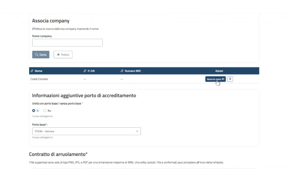
Selezione navi della company
Il sistema mostra una finestra dove è possibile selezionare tramite radio button una nave della propria company. Cliccare il pulsante "Seleziona nave" per completare l'associazione.
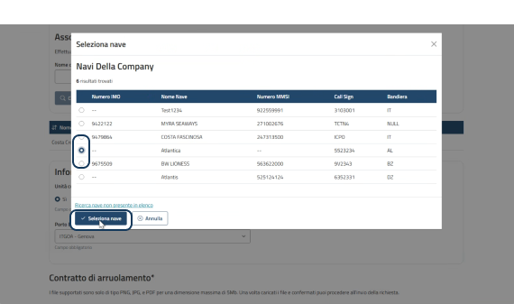
Navi associate e azioni disponibili
La company e le relative navi associate sono visualizzate in elenco. È possibile modificare l'associazione della company alla nave (tramite pulsante con l'icona della matita) o eliminare (tramite pulsante con l'icona del cestino) la company associata.
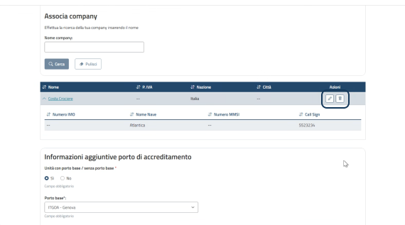
Informazioni aggiuntive e contratto di arruolamento
Indicare se l'unità è con porto base o meno (Sì/No). Se impostata su Sì, viene richiesto di indicare il "Porto base"; se impostata su No, indicare il primo porto di scalo. Allegare il contratto di arruolamento cliccando "Scegli file" e successivamente cliccando il pulsante "Carica".
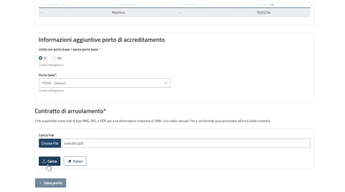
Finestra di conferma caricamento contratto
Il sistema mostrerà una finestra per confermare il caricamento del file; cliccare "Conferma" per proseguire.
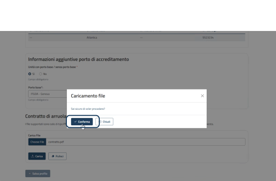
Azioni disponibili su file caricati e salvataggio profilo
Il documento viene mostrato nell'elenco file caricati. Il file può essere scaricato o eliminato tramite gli appositi pulsanti. Successivamente cliccare il pulsante "Salva profilo". L'utente verrà reindirizzato alla pagina iniziale dello step del dettaglio utente.
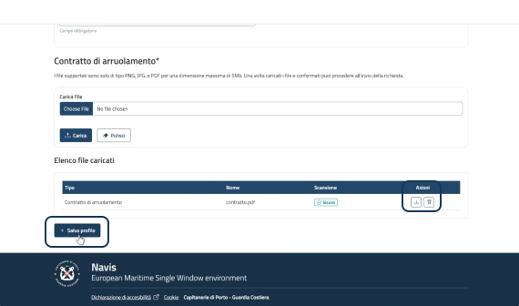
Richiesta compilata e step successivo
È possibile sia modificare il profilo aggiunto tramite il pulsante con l'icona della matita o eliminarlo tramite il pulsante con l'icona del cestino, sia aggiungere un ulteriore profilo secondo le modalità descritte all'inizio di questo step. Per proseguire cliccare il pulsante "Vai avanti".
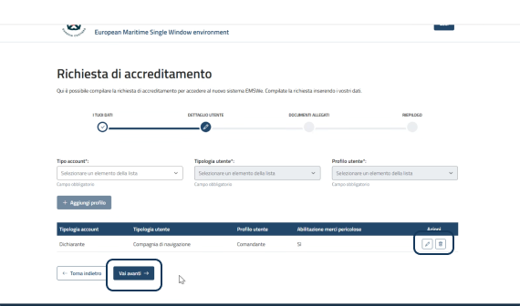
È possibile aggiungere ulteriori profili replicando le operazioni sopra descritte.
Dettaglio utente
Armatore
Selezione tipologia account e profilo utente
Selezionare come tipologia account "Dichiarante", come tipologia utente "Compagnia di navigazione" e come profilo utente "Armatore", infine cliccare il pulsante "Aggiungi profilo".
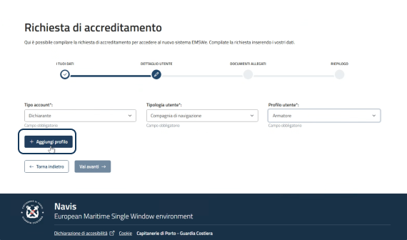
Compila richiesta
Dopo aver aggiunto uno o più profili, quest'ultimo compare all'interno della tabella. Proseguire cliccando l'apposito pulsante "Compila richiesta" per singolo profilo utente presente in tabella.
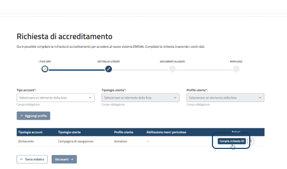
Libera Pratica Sanitaria e associazione company
Indicare l'abilitazione per la compilazione dell'obbligo di dichiarazione "B8 Libera Pratica Sanitaria", indicando un nuovo indirizzo qualora si selezioni "Altra residenza". Ricercare la company inserendo il nome. Successivamente cliccare il pulsante "Cerca".
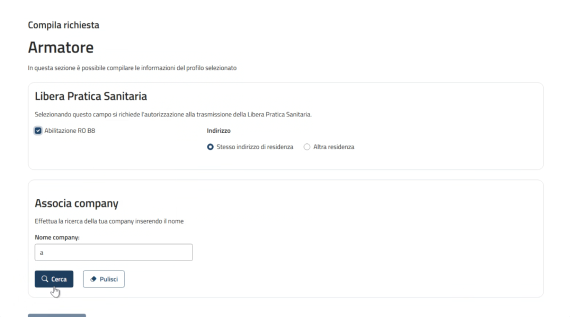
Selezione e associazione company
All'interno dell'elenco dei risultati della ricerca, selezionare una company tramite radio button e successivamente per associarla cliccare l'apposito pulsante "Associa".
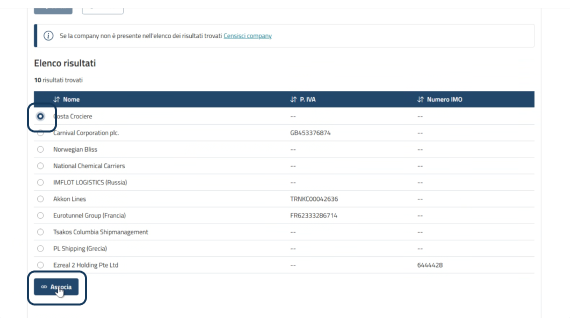
Informazioni aggiuntive (porto base)
Inserire le informazioni aggiuntive del porto di accreditamento selezionando il porto base tramite menu a tendina.
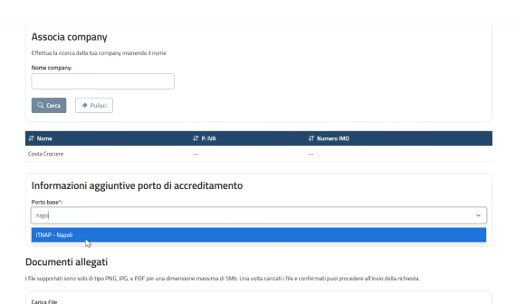
Caricamento documento (opzionale)
Allegare il file cliccando "Scegli file", selezionare la tipologia del documento e infine cliccare il pulsante "Carica".
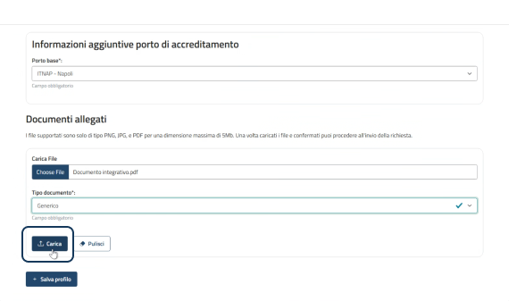
Conferma caricamento file
Il sistema mostrerà una finestra per confermare il caricamento del file; cliccare "Conferma" per proseguire.
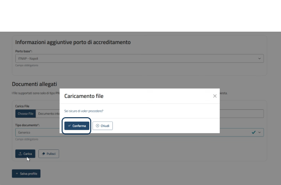
Azioni disponibili su file caricati e salvataggio profilo
Il documento viene mostrato nell'elenco file caricati. Il file può essere scaricato o eliminato tramite gli appositi pulsanti. Successivamente cliccare il pulsante "Salva profilo". L'utente verrà reindirizzato alla pagina iniziale dello step del dettaglio utente.
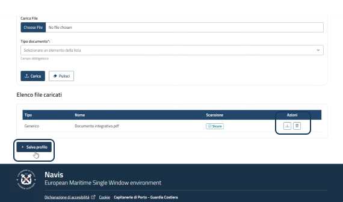
Richiesta compilata e step successivo
È possibile sia modificare il profilo aggiunto tramite il pulsante con l'icona della matita o eliminarlo tramite il pulsante con l'icona del cestino, sia aggiungere un ulteriore profilo secondo le modalità descritte all'inizio di questo step. Per proseguire cliccare il pulsante "Vai avanti".
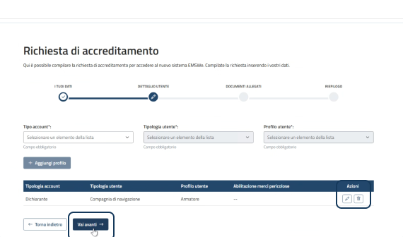
È possibile aggiungere ulteriori profili replicando le operazioni sopra descritte.
Dettaglio utente
ARP (Addetto alla Registrazione Passeggeri)
Selezione tipologia account e profilo utente
Selezionare come tipologia account "Dichiarante", come tipologia utente "Compagnia di navigazione" e come profilo utente "ARP (Addetto alla Registrazione Passeggeri)", infine cliccare il pulsante "Aggiungi profilo".
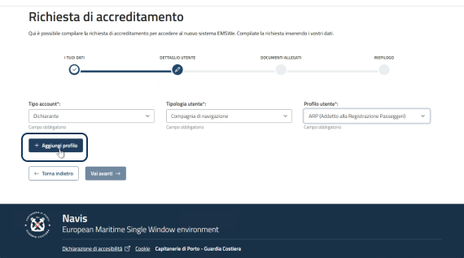
Compila richiesta
Dopo aver aggiunto uno o più profili, quest'ultimo compare all'interno della tabella. Proseguire cliccando l'apposito pulsante "Compila richiesta" per singolo profilo utente presente in tabella.
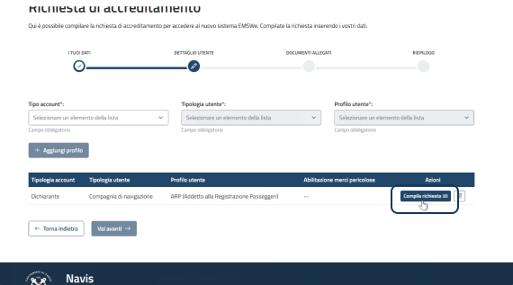
Associazione company
Ricercare la company inserendo il nome. Successivamente cliccare il pulsante "Cerca".
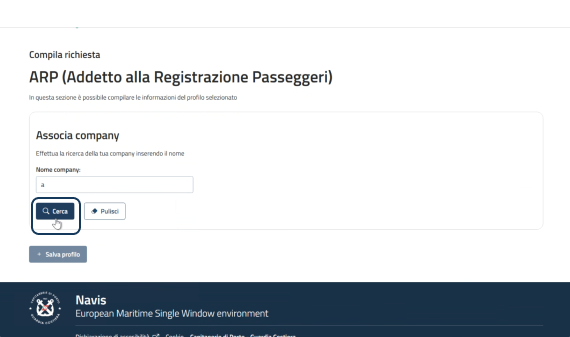
Selezione e associazione company
All'interno dell'elenco dei risultati della ricerca, selezionare una company tramite radio button e successivamente per associarla cliccare l'apposito pulsante "Associa".
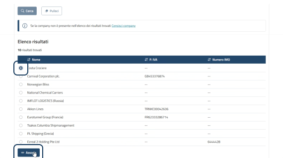
Associazione nave
Proseguire cliccando l'apposito pulsante "Associa nave" per singola company presente in tabella.
Selezione nave della company
Il sistema mostra una finestra dove è possibile selezionare tramite checkbox una o più navi della propria company. Cliccare il pulsante "Seleziona nave" per completare l'associazione.
Caricamento documenti (opzionale)
Scegliere il file da caricare tramite il pulsante "Scegli file". Indicare data di invio dell'atto di nomina, Capitaneria di porto, numero di protocollo, navi e porti oggetto dell'atto di nomina. Per caricare il documento cliccare il pulsante "Carica".
Azioni disponibili su file caricati e salvataggio profilo
Il documento viene mostrato nell'elenco file caricati. Il file può essere scaricato o eliminato tramite gli appositi pulsanti. Successivamente cliccare il pulsante "Salva profilo". L'utente verrà reindirizzato alla pagina iniziale dello step del dettaglio utente.
Richiesta compilata e step successivo
È possibile sia modificare il profilo aggiunto tramite il pulsante con l'icona della matita o eliminarlo tramite il pulsante con l'icona del cestino, sia aggiungere un ulteriore profilo secondo le modalità descritte all'inizio di questo step. Per proseguire cliccare il pulsante "Vai avanti".
È possibile aggiungere ulteriori profili replicando le operazioni sopra descritte.
Dettaglio utente
Terminalista
Selezione tipologia account, utente e profilo
Selezionare come tipologia account "Altri operatori", come tipologia utente "Azienda" e come profilo utente "Terminalista", infine cliccare il pulsante "Aggiungi profilo".
Compila richiesta
Dopo aver aggiunto uno o più profili, quest'ultimo compare all'interno della tabella. Proseguire cliccando l'apposito pulsante "Compila richiesta" per singolo profilo utente presente in tabella.
Aggiunta informazioni profilo selezionato
Indicare l'eventuale abilitazione alle merci pericolose (Sì/No) e proseguire con la ricerca dell'azienda da associare.
Ricerca azienda
Ricercare l'azienda inserendo la Denominazione, l'Identificativo fiscale o la Partita IVA. Successivamente cliccare il pulsante "Cerca".
Selezione e associazione azienda
All'interno dell'elenco dei risultati della ricerca, selezionare una o più aziende tramite checkbox e successivamente per associarle cliccare l'apposito pulsante "Associa".
Associazione porto
Proseguire cliccando l'apposito pulsante "Associa porto" per singola azienda presente in tabella.
Selezione e aggiunta porto
Il sistema mostra una finestra dove poter selezionare uno o più porti. Dopo la selezione, per aggiungerli cliccare il pulsante "Aggiungi".
Terminal associati e modifica
Proseguire cliccando l'apposito pulsante "Modifica terminal" per singolo porto presente in tabella.
Selezione e associazione terminal
Il sistema mostra una finestra dove poter selezionare uno o più terminal. Dopo la selezione, per aggiungerli cliccare il pulsante "Aggiungi".
Se il terminal non è presente nell'elenco dei risultati trovati, cliccare "Censisci terminal" all'interno della finestra di associazione.
Terminal associati e azioni disponibili
L'azienda e i relativi porti associati sono visualizzati in elenco. Per ogni azienda è possibile associare nuovi porti tramite l'apposito pulsante o eliminarla tramite il pulsante con l'icona del cestino. Per ogni porto associato è possibile modificare i terminal associati o eliminarlo tramite il pulsante con l'icona del cestino.
Caricamento documento (opzionale)
Allegare documenti cliccando "Scegli file" e successivamente cliccando il pulsante "Carica".
Finestra di conferma caricamento documento
Il sistema mostrerà una finestra per confermare il caricamento del file; cliccare "Conferma" per proseguire.
Azioni disponibili su file caricati e salvataggio profilo
Il documento viene mostrato nell'elenco file caricati. Il file può essere scaricato o eliminato tramite gli appositi pulsanti. Successivamente cliccare il pulsante "Salva profilo". L'utente verrà reindirizzato alla pagina iniziale dello step del dettaglio utente.
Richiesta compilata e step successivo
È possibile sia modificare il profilo aggiunto tramite il pulsante con l'icona della matita o eliminarlo tramite il pulsante con l'icona del cestino, sia aggiungere un ulteriore profilo secondo le modalità descritte all'inizio di questo step. Per proseguire cliccare il pulsante "Vai avanti".
È possibile aggiungere ulteriori profili replicando le operazioni sopra descritte.
Dettaglio utente
Società di Bunkeraggio
Selezione tipologia account e profilo utente
Selezionare come tipologia account "Dichiarante", come tipologia utente "Azienda" e come profilo utente "Società di bunkeraggio", infine cliccare il pulsante "Aggiungi profilo".
Compila richiesta
Dopo aver aggiunto uno o più profili, quest'ultimo compare all'interno della tabella. Proseguire cliccando l'apposito pulsante "Compila richiesta" per singolo profilo utente presente in tabella.
Associazione azienda
Ricercare l'azienda inserendo Denominazione, Identificativo fiscale o Partita IVA. Successivamente cliccare il pulsante "Cerca".
Selezione e associazione azienda
All'interno dell'elenco dei risultati della ricerca, selezionare una o più aziende tramite le checkbox e successivamente per associarle cliccare l'apposito pulsante "Associa".
Associazione porto
Proseguire cliccando l'apposito pulsante "Associa porto" per singola azienda presente in tabella.
Selezione e associazione porto
Il sistema mostra una finestra dove poter selezionare uno o più porti. Dopo la selezione, per aggiungerli cliccare il pulsante "Aggiungi".
Azioni disponibili sui porti associati
L'azienda e i relativi porti associati sono visualizzati in elenco. Per ogni azienda è possibile associare nuovi porti tramite l'apposito pulsante o eliminare l'azienda e/o i singoli porti utilizzando il pulsante con l'icona del cestino.
Caricamento documento (opzionale)
Scegliere il file da caricare tramite il pulsante "Scegli file" e selezionare tramite menu a tendina la tipologia dello stesso. Per caricare il documento cliccare il pulsante "Carica".
Finestra di conferma caricamento
Il sistema mostrerà una finestra per confermare il caricamento del file; cliccare "Conferma" per proseguire.
Azioni disponibili su file caricati e salvataggio profilo
Il documento viene mostrato nell'elenco file caricati. Il file può essere scaricato o eliminato tramite gli appositi pulsanti. Successivamente cliccare il pulsante "Salva profilo". L'utente verrà reindirizzato alla pagina iniziale dello step del dettaglio utente.
Richiesta compilata e step successivo
È possibile sia modificare il profilo aggiunto tramite il pulsante con l'icona della matita o eliminarlo tramite il pulsante con l'icona del cestino, sia aggiungere un ulteriore profilo secondo le modalità descritte all'inizio di questo step. Per proseguire cliccare il pulsante "Vai avanti".
È possibile aggiungere ulteriori profili replicando le operazioni sopra descritte.
Dettaglio utente
Ente
Selezione tipologia account e profilo utente
Selezionare come tipologia account "Ente" e come profilo utente "Consolato", infine cliccare il pulsante "Aggiungi profilo".
Compila richiesta
Dopo aver aggiunto uno o più profili, quest'ultimo compare all'interno della tabella. Proseguire cliccando l'apposito pulsante "Compila richiesta" per singolo profilo utente presente in tabella.
Aggiunta porto al profilo
Selezionare tramite menu a tendina uno o più porti da aggiungere al profilo.
Aggiungi porti
Dopo aver selezionato uno o più porti, cliccare il pulsante "Aggiungi".
Porti aggiunti e salvataggio profilo
I porti aggiunti saranno visualizzati all'interno dell'elenco. Il porto può essere eliminato tramite il pulsante con l'icona del cestino. Successivamente cliccare il pulsante "Salva profilo". L'utente verrà reindirizzato alla pagina iniziale dello step del dettaglio utente.
Richiesta compilata e step successivo
È possibile sia modificare il profilo aggiunto tramite il pulsante con l'icona della matita o eliminarlo tramite il pulsante con l'icona del cestino, sia aggiungere un ulteriore profilo secondo le modalità descritte all'inizio di questo step. Per proseguire cliccare il pulsante "Vai avanti".
È possibile aggiungere ulteriori profili replicando le operazioni sopra descritte.
Passaggi per creare nuova utenza (esterno)
Documenti allegati
-
I tuoi dati (completato)
-
Dettaglio utente (completato)
-
Documenti allegati (in corso)
-
Riepilogo (da completare)
Allegare documenti successivamente
È possibile aggiungere i documenti durante il processo di accreditamento oppure in un secondo momento, selezionando il pulsante "Salta e prosegui".
Focus sugli stati della scansione — Funzionalità comuni e modalità operative
Passaggi per creare nuova utenza (esterno)
Riepilogo
-
I tuoi dati (completato)
-
Dettaglio utente (completato)
-
Documenti allegati (completato)
-
Riepilogo (in corso)
Informazioni e possibili azioni
Nell'ultimo passaggio di riepilogo è possibile consultare tutte le informazioni inserite e sottomettere l'accreditamento tramite l'apposito pulsante.
Finestra di conferma
Il sistema mostrerà una finestra per confermare la creazione dell'utenza. Cliccare "Conferma" per proseguire.
Utenza creata
Il sistema informa l'utente che l'utenza è stata creata con successo: la richiesta, essendo stata inserita dal Responsabile Centrale, non richiede un iter approvativo. Pertanto la richiesta assumerà lo stato approvata.
Censimento nuova agenzia
Agenzia non presente in elenco
Censimento agenzia non presente
È possibile censire una nuova agenzia non presente nell'elenco dei risultati trovati, cliccando sul pulsante "Censisci agenzia".
Inserimento informazioni
Il sistema mostra una finestra dove inserire le informazioni della nuova agenzia da censire, come: Nazione, Denominazione, Natura giuridica, Partita IVA/VAT number e stato della stessa, Provincia, Indirizzo, Città e CAP/Zip Code. Per completare il censimento cliccare "Aggiungi".
Agenzia associata
All'interno dell'elenco dei risultati della ricerca, selezionare l'agenzia appena censita tramite checkbox e successivamente per associarla cliccare l'apposito pulsante "Associa". L'agenzia associata comparirà in elenco e sarà possibile associarle uno o più porti tramite l'apposito pulsante o eliminarla tramite il pulsante con l'icona del cestino.
Censimento nuova company
Company non presente in elenco
Censimento company non presente
È possibile censire una nuova company cliccando sul pulsante "Censisci company", disponibile all'interno del banner informativo. Il sistema mostra una finestra dove inserire il nome (obbligatorio) ed eventualmente l'IMO della company. Per aggiungerla in elenco cliccare il pulsante "Aggiungi".
Selezione e associazione
All'interno dell'elenco dei risultati della ricerca, selezionare la company appena censita tramite il radio button e successivamente per associarla cliccare l'apposito pulsante "Associa".
Company associata
Dopo averla associata, la company viene visualizzata in elenco. Sarà possibile associarle una nave tramite l'apposito pulsante "Associa nave" ed eliminarla tramite l'icona del cestino.
Censimento nuova azienda
Azienda non presente in elenco
Censimento azienda non presente
Dopo aver ricercato l'azienda tramite Denominazione, Identificativo fiscale o Partita IVA, cliccare il pulsante "Cerca" e, se l'azienda non è presente nell'elenco dei risultati trovati, cliccare "Censisci azienda".
Inserimento informazioni azienda
Il sistema mostra una finestra dove inserire le informazioni dell'azienda: Nazione, Denominazione, Natura giuridica, Partita IVA/VAT, Provincia, Indirizzo, Città e CAP/Zip Code. Successivamente cliccare il pulsante "Aggiungi".
Associazione azienda e azioni disponibili
Selezionare l'azienda aggiunta ed eventualmente altre aziende tramite checkbox e cliccare il pulsante "Associa". Una volta associata, associarle un nuovo porto tramite l'apposito pulsante o eliminarla tramite il pulsante con l'icona del cestino.
Censimento nuovo terminal
Terminal non presente in elenco
Censimento terminal non presente
Cliccando il pulsante "Modifica terminal" il sistema mostra una finestra attraverso la quale è possibile censire un nuovo terminal non presente nell'elenco dei risultati, cliccando il pulsante "Censisci terminal".
Selezione e associazione
Il sistema mostra una finestra dove inserire la descrizione del terminal da associare. Successivamente cliccare il pulsante "Aggiungi".
Terminal associato e azioni disponibili
L'azienda con i porti associati e i relativi terminal sono visualizzati nella tabella. Le azioni disponibili saranno "Associa porto", "Modifica terminal" e l'eliminazione tramite il pulsante con l'icona del cestino.
02.
Creazione utenza - Interno
Una panoramica sul flusso di creazione utenza interna da parte del Responsabile Centrale.
Profilo: Responsabile Centrale
Creazione utenza (Interno)
Punto di accesso
Dalla dashboard è possibile accedere alle principali sezioni tramite le voci di menu.
Menu a tendina
Cliccando sulla voce "Gestione e Consultazione" viene visualizzato un menu a tendina, da cui è possibile accedere alla "Gestione utenti".

Creazione utenza (Interno)
Avvio del flusso di creazione
Dopo aver effettuato l'accesso alla pagina tramite la voce "Gestione utenti", cliccare sul pulsante "Nuova Utenza" per avviare il flusso di creazione.
Il sistema darà la possibilità al Responsabile Centrale di creare l'utenza per utenti interni o esterni. Cliccare "Utente Interno".
Il Responsabile Centrale può creare un'utenza con relativa richiesta di accreditamento, a fronte di una richiesta di accreditamento pervenuta fuori sistema.
Creazione utenza (interno)
Passaggi per creare una nuova utenza (interno)
Per creare una nuova utenza, il Responsabile Centrale dovrà procedere seguendo i passaggi sottostanti. Diversamente dall'accreditamento dell'utente interno, la richiesta inserita dal Responsabile Centrale non richiede un iter approvativo.
Step 2
Dettaglio utente
Consente di aggiungere un nuovo profilo, indicando la tipologia: di account, utente e profilo.
Step 4
Riepilogo
Consente di visualizzare il riepilogo delle informazioni inserite negli step precedenti e procedere con la sottomissione dell'accreditamento.
Passaggi per creare nuova utenza (interno)
I tuoi dati
-
I tuoi dati (in corso)
-
Dettaglio utente (da completare)
-
Documenti allegati (da completare)
-
Riepilogo (da completare)
Dati anagrafici "Extra UE"
Per l'utente "Extra UE" il sistema chiederà di inserire i seguenti dati: Cittadinanza, Identificativo fiscale, se in possesso il numero EORI, Cognome, Nome, Genere, Stato, Luogo e data di nascita.

Dati anagrafici "Italiano o comunitario"
Per l'utente "Italiano o comunitario" il sistema chiederà di inserire la cittadinanza e l'identificativo fiscale/codice fiscale. In caso di cittadinanza italiana, con l'inserimento del codice fiscale, verificarlo cliccando il pulsante "Verifica".
Inserimento dati anagrafici
Dopo la verifica compilare i campi indicando: Cognome, Nome, Genere, Stato di nascita, Luogo di nascita e Data di nascita.
Inserimento dati di residenza e di contatto
Indicare se la residenza è estera o meno (Sì/No), l'indirizzo, numero civico, provincia, comune e CAP/ZIP Code. Successivamente inserire il contatto e-mail e telefonico. Cliccare "Vai avanti" per proseguire.

Documento di riconoscimento per utente Extra UE
Se l'utente è Extra UE, è necessario inserire il documento di riconoscimento, selezionando la tipologia del documento e successivamente indicando i dati: Numero documento, Rilasciato da, Data rilascio, Data di scadenza. Cliccare "Vai avanti" per procedere.

Requisiti per l'utente con cittadinanza Extra UE
Nel caso in cui l'utente selezioni la cittadinanza per Paesi Extra UE, l'utente deve dichiarare di essere in possesso di uno dei requisiti di seguito elencati:
- permesso di soggiorno UE per soggiornante di lungo periodo;
- permesso di soggiorno per asilo politico;
- permesso di soggiorno per protezione sussidiaria;
- carta di soggiorno UE come familiare extracomunitario di cittadino comunitario.
Passaggi per creare nuova utenza (interno)
Dettaglio utente
-
I tuoi dati (completato)
-
Dettaglio utente (in corso)
-
Documenti allegati (da completare)
-
Riepilogo (da completare)
Tipologia utente "CP Locale"
Selezionare come tipologia utente "CP Locale", successivamente selezionare il Profilo utente, il comando di appartenenza e il grado. Infine cliccare il pulsante "Aggiungi profilo".
Tipologia utente "CP Centrale"
Selezionare come tipologia utente "CP Centrale", successivamente selezionare il Profilo utente, il comando di appartenenza e il grado. Infine cliccare il pulsante "Aggiungi profilo".
Dettaglio utente
CP Locale
Associazione porto
Proseguire cliccando l'apposito pulsante "Associa porto" per singolo account presente in tabella.
Selezione e aggiunta porto
Il sistema mostra una finestra dove poter selezionare uno o più porti. Dopo la selezione, per aggiungerli cliccare il pulsante "Aggiungi".
Porto associato al profilo e possibili azioni
L'account e i relativi porti associati sono visualizzati in elenco. Per ogni account è possibile modificare l'associazione dei porti tramite l'apposito pulsante o eliminarla tramite il pulsante con l'icona del cestino. Per ogni porto associato è possibile eliminarlo tramite il pulsante con l'icona del cestino.
È possibile aggiungere ulteriori profili replicando le operazioni sopra descritte.
Dettaglio utente
CP Centrale
Profilo aggiunto e azioni disponibili
È possibile sia eliminare il profilo aggiunto tramite il pulsante con l'icona del cestino, sia aggiungere un ulteriore profilo secondo le modalità descritte precedentemente. Per proseguire cliccare il pulsante "Vai avanti".
È possibile aggiungere ulteriori profili replicando le operazioni sopra descritte.
Passaggi per creare nuova utenza (interno)
Documenti allegati
-
I tuoi dati (completato)
-
Dettaglio utente (completato)
-
Documenti allegati (in corso)
-
Riepilogo (da completare)
Allegare documenti successivamente
È possibile aggiungere i documenti durante il processo di accreditamento oppure in un secondo momento, selezionando il pulsante "Salta e prosegui".
Focus sugli stati della scansione — Funzionalità comuni e modalità operativeIl passaggio è identico per le tipologie utente CP Locale e CP Centrale.
Passaggi per creare nuova utenza (interno)
Riepilogo
-
I tuoi dati (completato)
-
Dettaglio utente (completato)
-
Documenti allegati (completato)
-
Riepilogo (in corso)
Riepilogo
CP Locale
Informazioni e possibili azioni
Nell'ultimo passaggio di riepilogo è possibile consultare tutte le informazioni inserite e sottomettere l'accreditamento tramite l'apposito pulsante.
Utenza creata
Il sistema informa l'utente che l'utenza è stata creata con successo: la richiesta, essendo stata inserita dal Responsabile Centrale, non richiede un iter approvativo. Pertanto la richiesta assumerà lo stato approvata.
Riepilogo
CP Centrale
Informazioni e possibili azioni
Nell'ultimo passaggio di riepilogo è possibile consultare tutte le informazioni inserite e sottomettere l'accreditamento tramite l'apposito pulsante.
Utenza creata
Il sistema informa l'utente che l'utenza è stata creata con successo: la richiesta, essendo stata inserita dal Responsabile Centrale, non richiede un iter approvativo. Pertanto la richiesta assumerà lo stato approvata.
03.
Ricerca utenza
Una panoramica sul flusso di ricerca delle utenze da parte del Responsabile Centrale e Locale.
Profilo: Responsabile Centrale/Locale
Ricerca utenza
Punto di accesso
Dalla dashboard è possibile accedere alle principali sezioni tramite le voci di menu.
Menu a tendina
Cliccando sulla voce "Gestione e Consultazione" viene visualizzato un menu a tendina, da cui è possibile accedere alla "Gestione utenti".

Ricerca e consultazione
Funzionalità in pagina
È possibile avviare la ricerca utilizzando i filtri disponibili:
- filtri base;
- filtri avanzati.
La schermata è suddivisa nelle seguenti tre sezioni:
Filtri di ricerca
La sezione Filtri consente di ricercare le utenze secondo diversi criteri. Sono disponibili filtri base, come Tipo operatore (obbligatorio), Tipo account (in relazione al tipo operatore selezionato), Tipologia utente (in relazione al tipo operatore selezionato), Profilo utente, Stato, Codice/Identificativo fiscale, Cognome e Nome, e filtri avanzati per affinare la ricerca per Agency/organization id, Accreditation port, Nome company, IMO company, Comando di appartenenza e Grado. I filtri applicati sono visualizzati e cancellabili.
Azioni sulla tabella
È possibile, dopo aver selezionato una o più utenze, eliminarle tramite il pulsante "Elimina".
Visualizzazione utenze tramite tabella
I risultati della ricerca vengono presentati in una tabella, mostrando le informazioni principali e le azioni disponibili per singola utenza: visualizzazione e modifica.
Il Responsabile Locale può ricercare solo le utenze relative ai porti per i quali risulta responsabile.
Ricerca e consultazione
Visualizzazione dettaglio utenza
All'interno della pagina sono consultabili le seguenti informazioni:
- Profilo utente:
- Dati anagrafici;
- Residenza;
- Dati di contatto;
- Dati di accesso;
- Lista profili utente;
- Documenti allegati.
04.
Modifica utenza
Una panoramica sul flusso di modifica delle utenze da parte del Responsabile Centrale.
Profilo: Responsabile Centrale
Modifica utenza
Passaggi per modificare un'utenza
Dopo aver creato un'utenza, il Responsabile Centrale può modificarla tramite i seguenti passaggi.
Attivazione della "Modifica" dall'elenco risultati di ricerca
Nell'elenco risultati delle utenze è possibile accedere al dettaglio in modalità modifica cliccando sull'icona della matita.
Azione di modifica
Selezionare il pulsante "Modifica" associato alla rispettiva sezione di informazioni dell'utenza che si desidera modificare.
Modifica campi utenza
Proseguire modificando uno dei campi dell'utenza, come il numero di telefono. Successivamente cliccare il pulsante "Vai avanti".
Informazioni e possibili azioni
Nell'ultimo passaggio di riepilogo è possibile consultare tutte le informazioni inserite e sottomettere l'accreditamento tramite l'apposito pulsante.
Finestra di conferma e successo
Il sistema mostrerà una finestra per confermare l'accreditamento; cliccare "Conferma" per proseguire. Il sistema informerà che la richiesta è stata inoltrata correttamente.
All'interno della pagina di dettaglio in modalità Modifica, il processo di aggiornamento delle informazioni seguirà lo stesso flusso guidato a step descritto nel flusso di "Creazione utenza".
05.
Eliminazione utenza
Una panoramica sul flusso di eliminazione delle utenze da parte del Responsabile Centrale.
Profilo: Responsabile Centrale
Eliminazione utenza
Passaggi per eliminare un'utenza (singola)
Dopo aver creato un'utenza, il Responsabile Centrale può eliminarla tramite i seguenti passaggi.
Ricerca utenza
Nell'elenco risultati della ricerca delle utenze è possibile accedere al dettaglio dell'utenza cliccando l'icona dell'occhio.
Eliminazione utenza
Nel dettaglio dell'utenza, per eliminarla, cliccare il pulsante "Elimina".
Finestra di conferma eliminazione e successo
Il sistema mostra una finestra in cui l'utente deve confermare di essere sicuro di voler eliminare l'utenza. Una volta eliminata, non sarà più possibile recuperarla.
Eliminazione utenza
Passaggi per eliminare più utenze (massiva)
Dopo aver creato una o più utenze, il Responsabile Centrale può eliminarle tramite i seguenti passaggi.
Selezione delle utenze
Nell'elenco risultati della ricerca è possibile selezionare una o più utenze tramite checkbox.
Eliminazione utenze
Dopo la selezione cliccare il pulsante "Elimina".
Finestra di conferma eliminazione e successo
Il sistema mostra una finestra di conferma dell'eliminazione. Cliccare il pulsante "Elimina utenza" per proseguire.
06.
Azioni disponibili sulle utenze (Responsabile Centrale)
Una panoramica sulle azioni disponibili da parte del Responsabile Centrale sulle utenze presenti a sistema.
Profilo: Responsabile Centrale
Azioni disponibili sulle utenze
Punto di accesso
Dalla dashboard è possibile accedere alle principali sezioni tramite le voci di menu.
Menu a tendina
Cliccando sulla voce "Gestione e Consultazione" viene visualizzato un menu a tendina, da cui è possibile accedere alla "Gestione utenti".

Azioni disponibili sulle utenze
Passaggi per ricercare le utenze
Il Responsabile Centrale può ricercare e valutare le utenze attive tramite i seguenti passaggi.
Il dettaglio del flusso di ricerca è descritto nella sezione Ricerca utenza.
Ricerca utenza
Ricercare l'utenza tramite uno dei campi visualizzati a sistema: filtri base o filtri avanzati. Cliccare "Cerca" per avviare la ricerca delle utenze presenti a sistema. I filtri applicati sono visualizzati e cancellabili.
Elenco risultati e azioni disponibili
I risultati verranno mostrati in tabella. Cliccare l'icona della matita per entrare in modalità modifica dell'utente.

Azioni disponibili sulle utenze
Azioni disponibili su un'utenza attiva
Il Responsabile Centrale avrà a disposizione le seguenti azioni:
L'utente, dopo aver verificato i dati presenti, può decidere di eliminarla.
L'utente, dopo aver verificato i dati presenti, può decidere se disabilitarla.
L'utente, dopo aver verificato i dati presenti, può decidere se sospenderla.
L'utente, dopo aver sospeso un'utenza, potrà decidere se riattivarla.
Azioni disponibili sulle utenze
Passaggi per eliminare l'utenza
Il Responsabile Centrale può eliminare l'utenza tramite i seguenti passaggi.
Eliminazione utenza
All'interno del dettaglio dell'utenza attiva, è possibile eliminarla tramite il pulsante "Elimina".
Finestra di conferma eliminazione
Il sistema mostra una finestra di conferma dell'eliminazione. Cliccare "Elimina utenza" per confermare.
L'utenza, una volta cancellata, non sarà più disponibile.
Azioni disponibili sulle utenze
Passaggi per disabilitare l'utenza
Il Responsabile Centrale può disabilitare un'utenza attiva tramite i seguenti passaggi.
Stato risultante: Disabilitata
Disabilita utenza
All'interno del dettaglio dell'utenza attiva, è possibile disabilitarla tramite il pulsante "Disabilita utenza".
Finestra di motivazione e successo
Il sistema mostra una finestra in cui inserire obbligatoriamente la motivazione; cliccare "Disabilita utenza" per proseguire. Il sistema mostra una finestra di successo.
Utenza disabilitata e stato
Dopo aver disabilitato l'utenza, la stessa assumerà lo stato "Disabilitata".
Il Responsabile Centrale può operare nella disabilitazione di un'utenza a fronte di una richiesta di disabilitazione pervenuta fuori sistema.
Azioni disponibili sulle utenze
Passaggi per sospendere l'utenza
Il Responsabile Centrale può sospendere un'utenza attiva tramite i seguenti passaggi.
Stato risultante: Sospesa
Sospendi utenza
All'interno del dettaglio dell'utenza attiva, è possibile sospenderla tramite il pulsante "Sospendi utenza".
Finestra di motivazione e successo
Il sistema mostra una finestra in cui inserire obbligatoriamente la motivazione; cliccare "Conferma sospensione" per proseguire. Il sistema mostra una finestra di successo.
Utenza sospesa e stato
Dopo aver sospeso l'utenza, la stessa assumerà lo stato "Sospesa".
Azioni disponibili sulle utenze
Passaggi per riattivare l'utenza
Il Responsabile Centrale può riattivare un'utenza sospesa tramite i seguenti passaggi.
Stato risultante: Attiva
Riattiva utenza
All'interno del dettaglio dell'utenza sospesa, è possibile riattivarla tramite il pulsante "Riattiva".
Finestra di conferma e successo
Il sistema mostra una finestra dove l'utente può confermare la riattivazione dell'utenza cliccando il pulsante "Conferma riattivazione". Il sistema mostra una finestra di successo.
Utenza attiva e stato
Dopo aver riattivato l'utenza, la stessa assumerà nuovamente lo stato "Attiva".
07.
Azioni disponibili sulle utenze (Responsabile Locale)
Una panoramica sulle azioni disponibili da parte del Responsabile Locale sulle utenze presenti a sistema.
Profilo: Responsabile Locale
Azioni disponibili sulle utenze
Punto di accesso
Dalla dashboard è possibile accedere alle principali sezioni tramite le voci di menu.
Menu a tendina
Cliccando sulla voce "Gestione e Consultazione" viene visualizzato un menu a tendina, da cui è possibile accedere alla "Gestione utenti".
Il Responsabile Locale può gestire solo le utenze relative ai propri porti di appartenenza.
Azioni disponibili sulle utenze
Passaggi per ricercare le utenze
Il Responsabile Locale può ricercare e valutare le utenze attive tramite i seguenti passaggi. Le azioni sull'utenza sono le stesse descritte per il Responsabile Centrale, nei limiti dei porti di competenza.
Il dettaglio del flusso di ricerca è descritto nella sezione Ricerca utenza.
Ricerca utenza
Ricercare l'utenza tramite uno dei campi visualizzati a sistema: filtri base o filtri avanzati. Cliccare "Cerca" per avviare la ricerca delle utenze presenti a sistema. I filtri applicati sono visualizzati e cancellabili.

Elenco risultati e azioni disponibili
I risultati verranno mostrati in tabella. Cliccare l'icona della matita per entrare in modalità modifica dell'utente.
Il Responsabile Locale può gestire solo le utenze relative ai propri porti di appartenenza.
Sospensione profilo/porto
Possibilità di sospensione del Responsabile Locale
Sospensione di profili e porti
Il Responsabile Locale può procedere con la sospensione di:
- profili;
- porti per cui è responsabile, presenti nel singolo profilo.
Profili di tipo "Company"
Tutti i Responsabili Locali possono sospendere il profilo degli utenti di tipo "Company" (Comandante, ARP, ecc.).
Il Responsabile Locale può gestire solo le utenze relative ai propri porti di appartenenza.